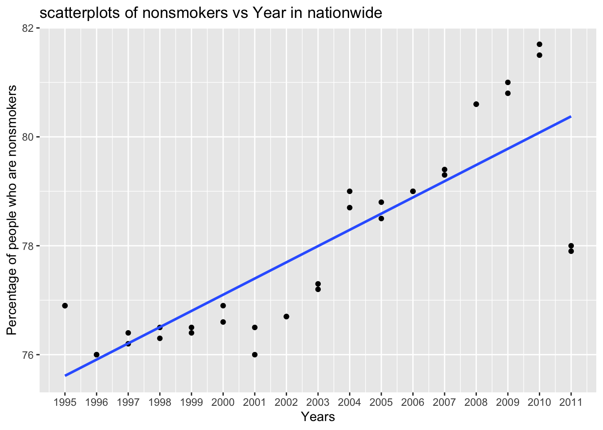
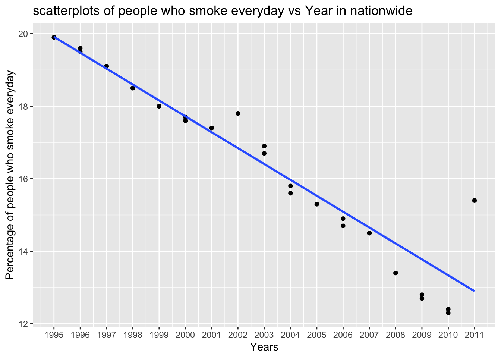
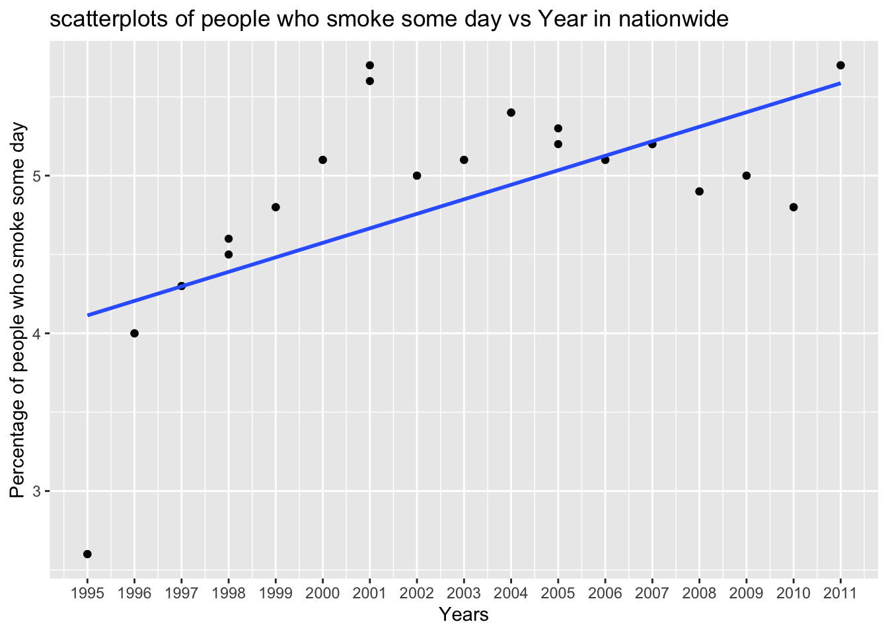
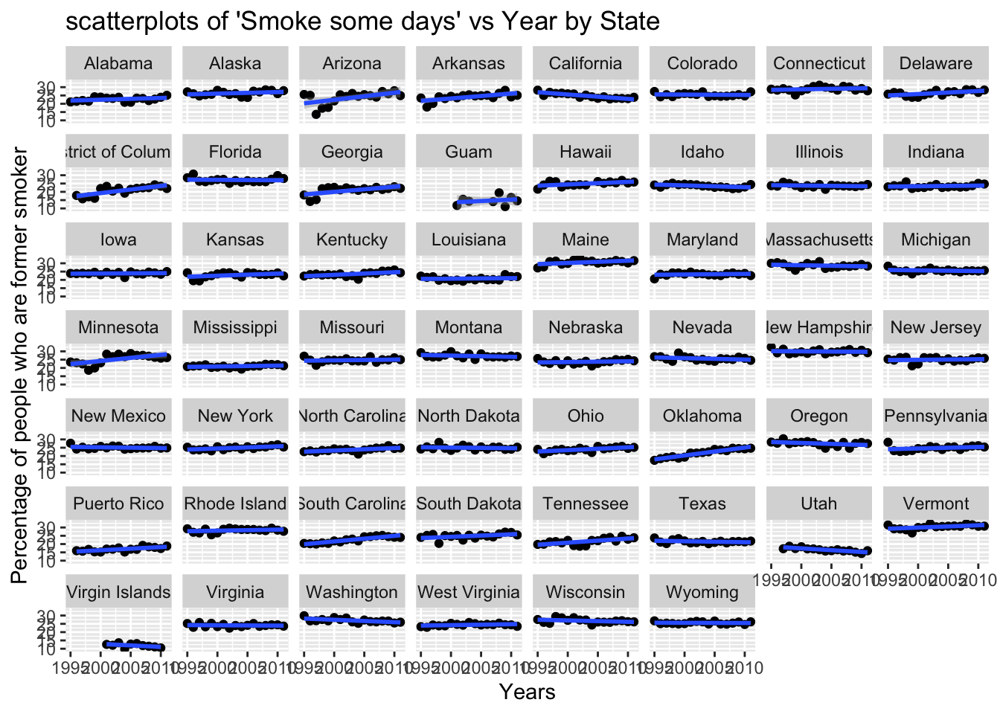

PM566 Final Project
Leona Ma
This is my PM566 Final Project website.
Introduction:
Smoking can increase the risk of many diseases, such as heart disease, stroke, and lung cancer. It is one of the most important risk factors of lung cancer. Tons of efforts have been done to prevent people from smoking. This data shows that how the proportion of four-level of smoking prevalence changed in adult over 1995-2011 in US. # Question: Was the proportion of American adults smoke decreasing during 1995-2011?
Methods:
I acquired the smoking data for 1996-2010 and 2011 separately from US Center for Disease Control and Prevention. I also extact the longitude and latitude data from the variable Location1 and merge it with data from 2011 to see how the smoking status in each state of US in 2011. Since there are four levels of smoking status (Smoke everyday, Smoke some days, Former smoker, Never smoked), I also create two variables to combine the first two variables and last two variables to see the the proportion of smokers and nonsmokers overall. Then, I split the dataset into two that has state data and nationwide data respectively. After all this data processing, I create several scatter plot to the the trend of tobacco use from 1995 to 2011.
Part 1 Data Cleaning and Wrangling
Step1 reading and combining the data sets
tobacco10 <- data.table::fread("tobacco2010.csv")
tobacco11 <- data.table::fread("tobacco2011.csv")
location <- data.table::fread("location.csv")
tobacco <- rbind(tobacco10, tobacco11)
tobacco11_L <- merge(tobacco11, location, by = "State")Tobacco11_L missed two observations including nationwide data. But it’s fine, we don’t want nationwide data in map.
Step2 creating two new variables “smokers and nonsmokers”
tobacco[, smokers := `Smoke everyday`+`Smoke some days`]
tobacco[, nonsmokers := `Former smoker`+`Never smoked`]Step3 Spliting the data sets
nation <- tobacco[State == "Nationwide (States and DC)" | State == "Nationwide (States, DC, and Territories)"]
area <- tobacco[!State == "Nationwide (States, DC, and Territories)" & !State == "Nationwide (States and DC)"]Part 2 Looking at the Data
dim(tobacco)
head(tobacco)
tail(tobacco)
str(tobacco)
summary(tobacco$`Smoke everyday`)
summary(tobacco$`Smoke some days`)
summary(tobacco$`Former smoker`)
summary(tobacco$`Never smoked`)Part 3 Preliminary Results
Step 1 Taking a look at the top5 proportions of smokers and nonsmokers.
top5_smoke <- tobacco[order(`smokers`,decreasing = TRUE)][1:5]
tab <- top5_smoke[, .(Year = Year, State = State, `proportions of smokers` = smokers)]
knitr::kable(tab)| Year | State | proportions of smokers |
|---|---|---|
| 2003 | Guam | 34.1 |
| 2002 | Kentucky | 32.6 |
| 2002 | Guam | 31.9 |
| 1996 | Kentucky | 31.7 |
| 1999 | Nevada | 31.5 |
top5_nonsmoke <- tobacco[order(`nonsmokers`,decreasing = TRUE)][1:5]
tab <- top5_nonsmoke[, .(Year = Year, State = State, `proportions of nonsmokers` = nonsmokers)]
knitr::kable(tab)| Year | State | proportions of nonsmokers |
|---|---|---|
| 2010 | Virgin Islands | 94.2 |
| 2008 | Virgin Islands | 93.6 |
| 2009 | Virgin Islands | 93.6 |
| 2005 | Virgin Islands | 91.9 |
| 2007 | Virgin Islands | 91.4 |
From these two table, we can see that the 5 highest proportions of smokers are concentrated on 1996-2003 period, and the 5 highest proportions of nonsmokers are concentrated on 2005-2010. They show a basic trend that proportion of smokers were decreasing. However, further data exploration is still needed to make conclusion.
Step 2 Looing at smokers and nonsmokers overall in nationwide and statewide respectively
Smokers nationwide:
ggplot(data = nation, mapping =aes(x = Year, y=smokers, color = State)) +
geom_point() +
geom_smooth(method=lm,se=FALSE, fullrange=TRUE) +
scale_x_continuous(limits=c(1995, 2011), breaks = seq(1995, 2011, 1))+
labs(title = "scatterplots of smokers vs Year in nationwide", x="Years", y="Percentage of people who are smokers")## `geom_smooth()` using formula 'y ~ x'
From this plot we can see that adding data from territories didn’t change the trend much and it has some missing values, so just looking at the red line is fine. We can clearly see a decreasing trend in this plot. However, there is a small fluctuation between 2000-2003 and a relatively large increase from 2010 to 2011.
Smokers in statewide
ggplot(data=area, mapping=aes(x = Year, y = smokers)) +
geom_point() +
facet_wrap(~State) +
geom_smooth(method='lm', formula = y~x)+
labs(title = "scatterplots of smokers vs Year by State", x="Years", y="Percentage of people who are smokers")
From these plots,even thought they are pretty small, we can still see that most of them have the decreasing trend of smoker proportions, and the the last point is higher than the regression line. The small fluctuation can be found in some of the area, such as South Dakota and Nevada. Thus, the result from statewide is corresponding to that of nationwide. Since all the plots has the same y-scale, we can state that the overall proportion of smokers is the highest in Kentucky, and it is relatively low in Utah and Virgin Islands.
Nonsmokers nationwide:
ggplot(data = nation, mapping =aes(x = Year, y=nonsmokers, color = State)) +
geom_point() +
xlab("Years") + ylab("percentage") +
geom_smooth(method=lm,se=FALSE, fullrange=TRUE) +
scale_x_continuous(limits=c(1995, 2011), breaks = seq(1995, 2011, 1))+
labs(title = "scatterplots of nonsmokers vs Year in nationwide", x="Years", y="Percentage of people who are nonsmokers")## `geom_smooth()` using formula 'y ~ x'
Nonmokers in statewide
ggplot(data=area, mapping=aes(x = Year, y = nonsmokers)) +
geom_point() +
facet_wrap(~State) +
geom_smooth(method='lm', formula = y~x)+
labs(title = "scatterplots of nonsmokers vs Year by State", x="Years", y="Percentage of people who are nonsmokers")
The result from proportions of nonsmokers are exactly opposite of that of the smokers. We can clearly see a increasing trend in nationwide plot.There is a small fluctuation between 2000-2003 and a relatively large decrease from 2010 to 2011. From the statewide plots, we can see that most of them have the increasing trend of nonsmoker proportions, and the the last point is lower than the regression line. The small fluctuation can be found in some of the area, such as South Dakota and Nevada. we also can state that the overall proportion of nonsmokers is the lowest in Kentucky, and it is relatively high in Utah and Virgin Islands.
Step 3 Looing at 4-level of tobacoo use in nationwide and statewide respectively
Smoke everyday in nationwide
ggplot(data = nation, mapping =aes(x = Year, y=`Smoke everyday`, color = State)) +
geom_point() +
geom_smooth(method=lm,se=FALSE, fullrange=TRUE) +
scale_x_continuous(limits=c(1995, 2011), breaks = seq(1995, 2011, 1))+
labs(title = "scatterplots of people who smoke everyday vs Year in nationwide", x="Years", y="Percentage of people who smoke everyday")## `geom_smooth()` using formula 'y ~ x'
Smoke everyday in statewide
ggplot(data=area, mapping=aes(x = Year, y = `Smoke everyday`)) +
geom_point() +
facet_wrap(~State) +
geom_smooth(method='lm', formula = y~x)+
labs(title = "scatterplots of 'Smoke everyday' vs Year by State", x="Years", y="Percentage of people who smoke everyday")
For proportions of people who smoke everyday, we can see that it is pretty similar with smokers overall, which has a clearly decreasing trend, little fluctuation and large increase in 2011. The difference is that the little fluctuation begins at 2002.
Smoke some days in nationwide
ggplot(data = nation, mapping =aes(x = Year, y=`Smoke some days`, color = State)) +
geom_point() +
geom_smooth(method=lm,se=FALSE, fullrange=TRUE) +
scale_x_continuous(limits=c(1995, 2011), breaks = seq(1995, 2011, 1))+
labs(title = "scatterplots of people who smoke some day vs Year in nationwide", x="Years", y="Percentage of people who smoke some day")## `geom_smooth()` using formula 'y ~ x'
Smoke some days in statewide
ggplot(data=area, mapping=aes(x = Year, y = `Smoke some days`)) +
geom_point() +
facet_wrap(~State) +
geom_smooth(method='lm', formula = y~x)+
labs(title = "scatterplots of 'Smoke some days' vs Year by State", x="Years", y="Percentage of people who smoke some days")
From the first nationwide plot, we can see that proportions of prople who smoke some day increased steadily from 1995 to 2001, and decreased in 2002, which corresponding to the decreasing of people who smoke everyday. We can make a reasonable inference that from 1995 to 2001, there were certain amount of people who reduced their smoking frequency, but part of them didn’t stick to it, and smoked everyday again in 2002. Even though, from 2004 to 2010 there is a steady decrease, it went back agian in 2011. The statewide plots show a overall inceasing trend.
Former smoker in nationwide
ggplot(data = nation, mapping =aes(x = Year, y=`Former smoker`, color = State)) +
geom_point() +
geom_smooth(method=lm,se=FALSE, fullrange=TRUE) +
scale_x_continuous(limits=c(1995, 2011), breaks = seq(1995, 2011, 1))+
labs(title = "scatterplots of people who are former smoker vs Year in nationwide", x="Years", y="Percentage of people who are former smoker")## `geom_smooth()` using formula 'y ~ x'
Former smoker in statewide
ggplot(data=area, mapping=aes(x = Year, y = `Former smoker`)) +
geom_point() +
facet_wrap(~State) +
geom_smooth(method='lm', formula = y~x)+
labs(title = "scatterplots of 'Smoke some days' vs Year by State", x="Years", y="Percentage of people who are former smoker")
From the plot of proportions of people who are former smokers, we can see the overall trend is increasing, but it fluctuates a lot. The trend is different across each state. My inference is that there had been people try to quit smoking, but it is hard to insist.
Never smoked in nationwide
ggplot(data = nation, mapping =aes(x = Year, y=`Never smoked`, color = State)) +
geom_point() +
geom_smooth(method=lm,se=FALSE, fullrange=TRUE) +
scale_x_continuous(limits=c(1995, 2011), breaks = seq(1995, 2011, 1))+
labs(title = "scatterplots of people who never smoked vs Year in nationwide", x="Years", y="Percentage of people who never smoked")## `geom_smooth()` using formula 'y ~ x'Never smoked in statewide
ggplot(data=area, mapping=aes(x = Year, y = `Never smoked`)) +
geom_point() +
facet_wrap(~State) +
geom_smooth(method='lm', formula = y~x)+
labs(title = "scatterplots of 'Smoke some days' vs Year by State", x="Years", y="Percentage of people who are Never smoked")
From the first plot of proportions of people who never smoked, we can clearly see that there is a increasing trend in the whole time period. The fluctuation between 2000 and 2003, and the large increase in 2011 are corresponding to the overall smokers and nonsmokers situation. Conditions are pretty different among each state. Most of the states have a overall increase trend or relatively steady, but some states like Oklahoma has a decreasing trend.
Step 4 See percentage of people who smoke everyday over the country in most recent year, 2011
tem.pal <- colorNumeric(c('green','yellow','red'), domain=tobacco11_L$`Smoke everyday`)
leaflet(tobacco11_L) %>%
addTiles() %>%
addCircles (lat = ~Latitude, lng = ~Longitude, color = ~tem.pal(`Smoke everyday`),
label = ~`Smoke everyday`,
opacity=10, fillOpacity = 10, radius = 100000) %>%
addLegend('bottomleft', pal= tem.pal, values = tobacco11_L$`Smoke everyday`,
title ='percentage of smokers', opacity=0.5)This plot shows that the proportion of people who smoke everyday are higher in the middle east part of America, especially in Kentucky and West Virginia, which is corresponding to what we found in our statewide plots.
Conclusion:
Generally speaking, the proportion of smokers is decreasing between 1995 and 2010 in US, but it increased a lot in the last year of observation, 2011. Thus, further data still needed since ten years have been pasted. It is highly possible that proportion of smokers has been increasing since 2011. Moreover, the reason of fluctuation between 2000-2003 is also worth exploring, since in order to reduce the number of smokers, we have to know why it increased. Even though proportion of smokers was decreasing for all the states, the exact proportions of it is quite different. Further information is still needed to figure out why.